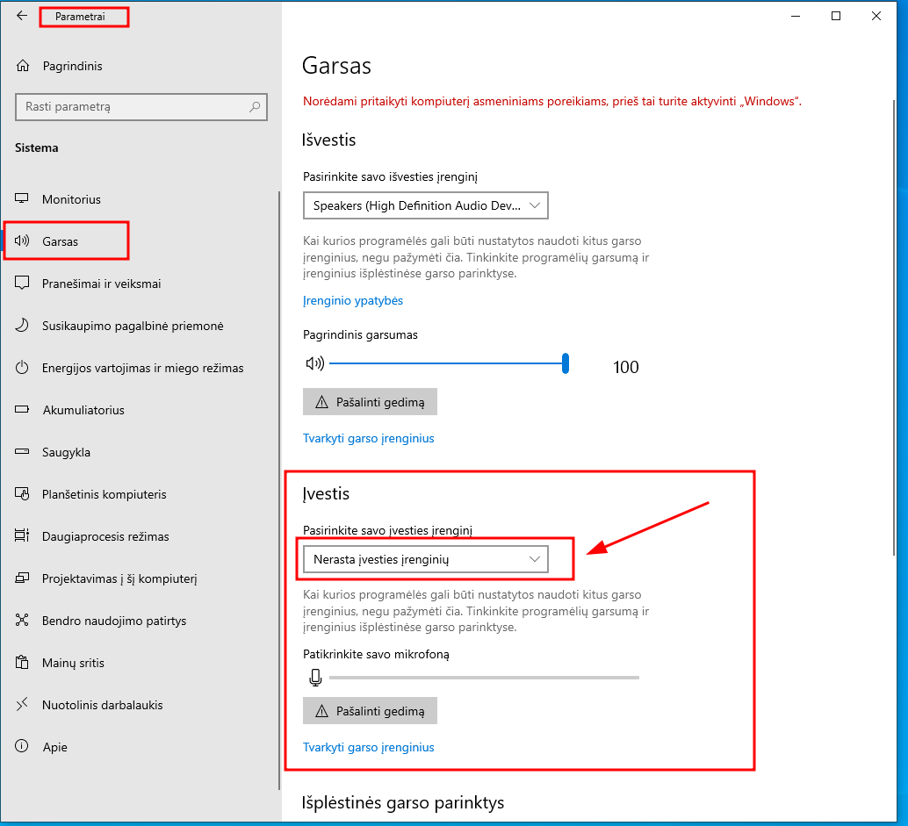
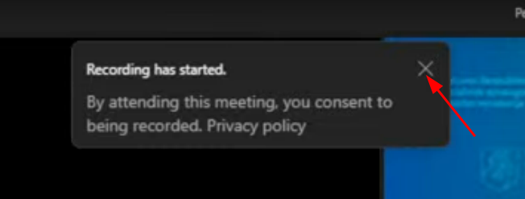
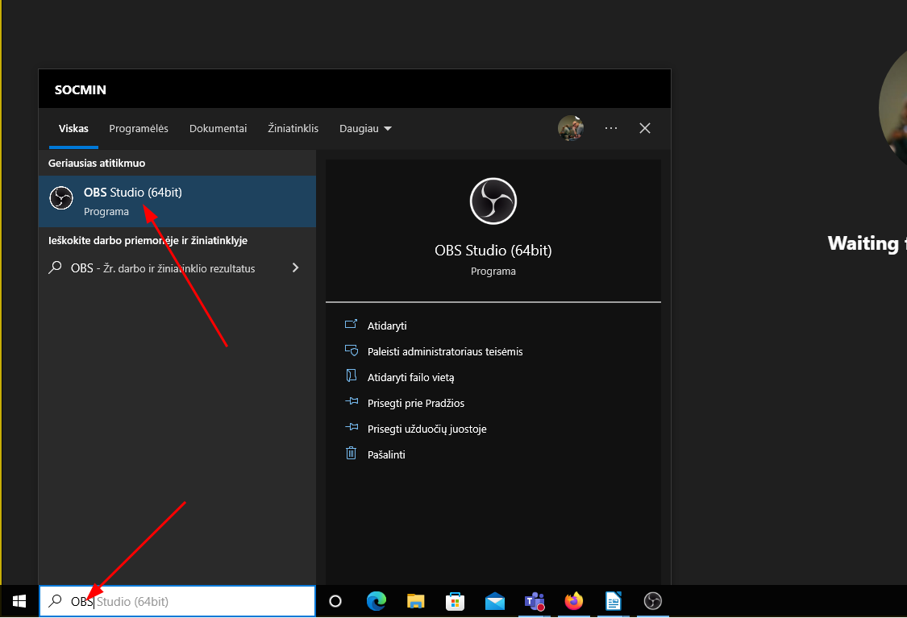
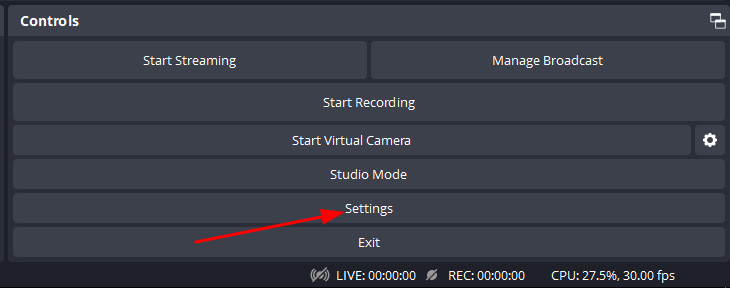
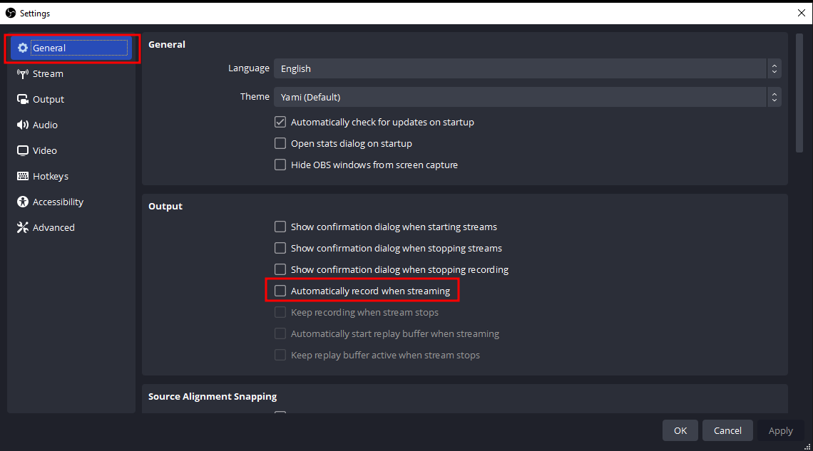
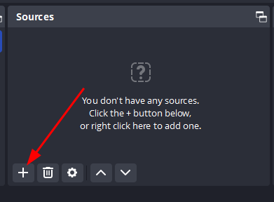
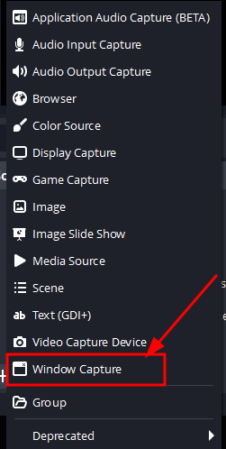
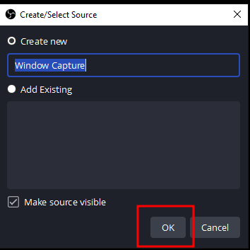

Šiame skyriuje aprašomi veiksmai iš dviejų kompiuterių perspektyvos:
- organizatoriaus
- transliuotojo
3.1 Organizatoriaus nustatymai
Įprastai paleidus TEAMS susitikimą, renginio organizatorius (arba bet kuris dalyvis) turi patvirtinti kiekvieną norintį prisijungti prie susitikimo. Dėl šios priežasties ekrane atsiranda pop-up pranešimas apie norinčius prisijungti, papildomai girdimas pranešimo signalas. Kad būtų išvengta šių vaizdo ir garso trikdžių rekomenduojami šie nustatymai:
TEAMS susitikimo lange:
Einama į Meeting options:
Keičiami šie nustatymai:
Who can bypass the lobbykeičiama įEveryoneAnnounce when callers join ir leaveišjungiama
Dabar kiekvienas turintis nuorodą galės tiesiogiai patekti į susitikimą, apeinant lobby. Tai sumažins organizatoriaus darbo naštą. Turint omenyje, jog posėdžiai yra atviri, saugumo prasme toks atvėrimas nesukelia didelės rizikos. Juo labiau, jog ateityje į transliacijas turėtų jungtis tik TT nariai bei pranešėjai, o plati visuomenė bei žiniasklaidos atstovai - sekti transliacijas SADM Youtube paskyroje.
3.2 Live transliavimas
Žemiau detaliai aprašomas visas transliavimo procesas iš transliuotojo kompiuterio perspektyvos.
3.2.1 Pasitikrinti ar pasirinktas teisingas energijos maitinimo planas
Dešiniu pelės mygtuku spaudžiama ant maitinimo ikonėlės:
Atidaroma Maitinimo parinktys:
Būtina pasitikrinti, ar pasirinktas didelio efektyvumo (ar kitaip pavadintas) planas, kuris buvo sukurtas pirmame skyriuje. Tai yra svarbu, nes toks pasirinkimas užtikrina jog vykdant transliaciją ir ilgesnį laiką nesąveikaujant su kompiuteriu, šis nepereitų į miego ar energijos taupymo rėžimą, neišjungtų ekrano ir bendrai, jog kompiuterio procesorius veiktų maksimaliu pajėgumu, taip užtikrinant pakankamus resursus transliavimo procesui:
3.2.2 Pasitikrinti ar deaktyvuotas mikrofonas
Parametruose nuėjus į Garsas turėtų matytis, jog Nerasta įvesties įrenginių, tai reiškia, jog kompiuteryje deaktyvuotas mikrofonas. Tai labai svarbu, nes antraip paleidus transliaciją ir fone atsiradus garsams, TEAMS rodys pranešimą, jog rekomenduoja įjungti mikrofoną.

3.2.3 Teams paleidimas
Prisijungiant prie norimo susitikimo, turėtų matytis, jog :
- kamera yra deaktyvuota / neįjungta
- mikrofonas yra deaktyvuotas
- garsas yra nustatytas maksimalus

Prisijungus prie susitikimo, TEAMS gali išmesti du pranešimus, kuriuos transliuotojas turėtų išjungti:
- pranešimą apie tai, jog nerastas mikrofonas
- organizatoriui pradėjus susitikimo įrašą, išjungti pranešimą apie daromą įrašą

Siekiant jog OBS-STUDIO programa pagautų TEAMS vaizdą teisingu (16:9 ekrano santykio) formatu, reikia pasirinkti, jog TEAMS susitikimas būtų rodomas pilnu ekranu (full-screen):
3.2.4 Transliacija per OBS-Studio
Paspaudus WIN klavišą ir atsidarius START meniu bei juostai, galima atsidaryti OBS-STUDIO programą:

3.2.5 Transliavimo pagrindiniai nustatymai
Prieš kiekvieną transliaciją rekomenduojama pasitikrinti pagrindinius nustatymus:

Generallange - ar nėra aktyvuotas automatinis video įrašinėjimas (jeigu taip, reikia deaktyvuoti):

Streamlange - yra sąsaja su SADM Youtuba paskyra:
Videolange - ar abi rezoliucijos yra1920x1080ir30kadrų per sekundę (Common FPS Values):
Jeigu visi nustatymai teisingi, galima uždaryti nustatymų langą.
3.2.6 Transliavimo šaltinio pridėjimas
- pagrindiniame
OBS-Studiolange, tiesSourcesspaudžiama ant+jog pridėti naują video šaltinį:

- Pasirinkimas
Window Capture, kuris retransliuoja pasirinkto lango vaizdą:

- atsidariusiame pop-up lange galima pakeisti pavadinimą, bet nebūtina, tad spaudžiama ant
OK:

Atsidariusiame naujame lange OBS-Studio bando automatiškai parinkti, kurį langą transliuosime.
- jeigu matomas vaizdas / parinktas langas neteisingas, paspaudus ant
Windowparinkties galima pakeisti langą Capture Methodreikėtų pakeisti įWindows 10- BŪTINA nuimti varnelę nuo
Capture Cursor, jog transliuojant nebūtų matomi pelės judesiai - Spaudžiama ant
OK
- Labai dažnai nutinka taip, jog transliavimo langas (šiuo atveju
TEAMS) netelpa į transliavimo ekrano rėmus, t.y. matomi dryžiai šonuose:
- Tokiu atveju paspaudus ant raudonų kampinių kvadratukų galima reguliuoti transliuojamo lango dydį ir pritaikyti jį transliavimo ekranui:
- baigus transliuojamas langas (
TEAMS) ir transliavimo ekranas turėtų pilnai atitikti (nesimatyti dryžuotų regionų arba juodų juostų):
3.2.7 Transliacijos pasirinkimas
- paspaudus ant
Manage broadcastatsidaro transliavimo sukūrimo (Create New Broadcast) arba jau sukurtų renginių pasirinkimo langas (Select existing Broadcast). Spaudžiama ant sukurtų renginių pasirinkimo lango (Select existing Broadcast):
- Pasirenkame norima transliacija (pasirinkta transliacija tampa mėlyna)
- pabaigus pasirinkimą spausti ant
Select broadcast
Negalima spausti ant Select broadcast and start streaming nes kitaip iš karto pasileis tiesioginė transliacija ir jos nebebus galima sustabdyti, arba sustabdžius nebebus galima pratęsti / transliuoti dar kartą.
Controls skiltyje matome, jog Manage broadcast tapo mėlyna, taigi transliacija yra pasirinkta
Kada pradėti transliacija:
- kai
TEAMSorganizatorius paleidžia video įrašą, transliuotojas išjungia pranešimą apie daromą įrašą - turimas kvorumas ir t.t.
- spaudžiama ant
Start streaming OBS-studiopradeda transliuoti tiesiogiai per Youtube
- Patikrinama ar garsas švyti ties žalios zonos pabaiga / geltonos zonos pradžia, jeigu per mažai garso, galima padidinti, jeigu garso amplitudė patenka kartais į raudoną zoną, galima pritildyti reguliuojant garso kiekį
3.2.8 Kompiuterio garso išjungimas
Sutvarkius garsą ir nenorint jog notebookas garsiai leistų TT posėdį, galima išjungti kompiuterio garsą, paspaudus ant garso įkonėlės ekrano dešiniame kampe:
Spaudžiant ant garsiakalbio simbolio. Kai jis perbrauktas, kompiuteris nutyla, tačiau transliacija vyksta toliau su garsu:
3.2.9 Transliacijos kokybė
- Transliacijos pradžioje būtų gerai pažiūrėti, koks yra kompiuterio apkrovimas (
CPU) ir kiek kadrų per sekundę siekia vaizdo kokybė (FPS), kuri turėtų būti apie 30 - jeigu vaizdo kokybė nukrenta žemiau nei 25 FPS, galimai interneto greitis, arba kompiuterio galia nepakankami, siekiant kokybiškai vykdyti transliacijas
3.2.10 Transliacijos nutraukimas
- transliacija nutraukiama paspaudus ant
Stop Recording:
- Ir patvirtinus nutraukimą atsiradusiame pop-up lange: